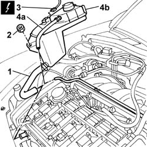
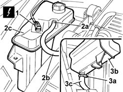

1088B10 Engine coolant SUPPLY RESERVOIR - R.R.
- Path
- Procedures > 10 ENGINE > 1088 ENGINE COOLING > 1088B ENGINE COOLANT RADIATOR AND RESERVOIR > 1088B10 Engine coolant SUPPLY RESERVOIR - R.R.
- Kind
- repair procedure (removal / refitting; the operation number is the code)
- Applies to
- engines: 2.0 TB, 2.4 20V, 3.0 V6, 3.2 V6; all production periods
- Interactive page
- https://sloeber94.github.io/elrnDB-lThss/en/#/75270
Applies to: engines: 2.0 TB, 2.4 20V; all production periods
 Removing
Removing
 Refitting
RefittingSee in Op. 7055B54 PROTECTION/GUARD under engine - R.R.
See in Op. 1016A40 Ignition COIL COVER on cylinder head - R.R.
1. Disconnect the band retaining the coolant pipe to the cylinder head.
2. Undo the nut fixing the expansion tank (this nut also fastens the windscreen washer fluid reservoir).
3. Disconnect the electrical connection for the engine coolant level.
 | Description | Connector |
|---|---|---|
3 | Engine coolant level sensor | K026 |
4. Disconnect the pipe (4a) and lift the expansion tank (4b) and remove it.

Applies to: engines: 2.0 TB, 2.4 20V; all production periods
Refitting
Removing- Place the engine coolant tank back in its housing.
- Connect the engine cooling system pipes.
- Connect the electrical connection for the engine coolant level.
| Description | Connector |
|---|---|---|
. | Engine coolant level sensor | K026 |
- Tighten the nut fixing the engine coolant tank.
See in Op. 1016A40 Ignition COIL COVER on cylinder head - R.R.
Applies to: engines: 3.0 V6, 3.2 V6; all production periods
Removing
Refitting- Open the boot, remove the cover on the left hand side and disconnect the negative battery lead.
See in Op. 7040D50 ENGINE COMPARTMENT UPPER SOUND INSULATION SHIELD - R.R.
- Drain the engine coolant tank using a suitable syringe.
1. Disconnect the electrical connection for the engine coolant level.
| Description | Connector |
|---|---|---|
1 | Engine coolant level sensor | K026 |
2. Open the band (2a) and disconnect the coolant return pipe (2b) from the thermostat unit, then lift up the tank (2c).
3. Open the retaining band (3a) and disconnect the coolant supply pipe (3b) from the engine coolant tank (3c), then remove the tank.

Applies to: engines: 3.0 V6, 3.2 V6; all production periods
Refitting
Removing- Close the band retaining the coolant pipe, then position the tank.
- Connect the coolant return pipe from the thermostat unit to the tank and close the retaining band.
- Connect the electrical connection for the engine coolant level sensor.
| Description | Connector |
|---|---|---|
. | Engine coolant level sensor | K026 |
See in Op. 7040D50 ENGINE COMPARTMENT UPPER SOUND INSULATION SHIELD - R.R.
- Connect the negative battery lead, then close the boot.
See in Op. 0010T21 ENGINE COOLANT - Check density and top up if necessary
- [0010T21]
Topics linked from this page (5)
- 0010T20 Engine REFRIGERANT FLUID - Change
- 0010T21 ENGINE COOLANT - Check density and top up if necessary
- 1016A40 Ignition COIL COVER on cylinder head - R.R.
- 7040D50 ENGINE COMPARTMENT UPPER SOUND INSULATION SHIELD - R.R.
- 7055B54 PROTECTION/GUARD under engine - R.R.
Topics that link to this page (30)
- X10 ENGINE COOLANT LEAKS
- 1004B17 POWER UNIT with automatic transmission, complete with support frame, front suspension- R.R. for versions with air conditioning
- 1008A46 Power unit RIGID MOUNT - TIMING side - R&R
- 1008B10 FLEXIBLE MOUNTING for power unit front support (timing side) - Replace
- 1008C10 Power unit REACTION ROD - Replace
- 1008C16 BRACKET on BODY for reaction link - R.R.
- 1016A30 Left TAPPET COVER - R.R. and Replace gasket
- 1016A36 Left and right TAPPET COVERS - R.R.
- 1016D20 LEFT CYLINDER HEAD - R.R. and replace gasket
- 1016D24 RIGHT CYLINDER HEAD - REMOVING-REFITTING AND REPLACING GASKET
- 1020D12 Crankshaft oil seal FRONT COVER - R.R. and Replace seals
- 1020D18 Front crankshaft COVER OIL SEAL - Replace
- 1020D39 Flywheel side OIL SEAL - Replace for versions with automatic transmission
- 1024B20 ENGINE FLYWHEEL - R&R for versions with automatic transmission
- 1032B10 TOOTHED timing BELT - R.R. for timing adjustment or replacement
- 1032B55 LEFT HEAD TOOTHED DRIVEN PULLIES - R.R. FOR VERSIONS WITH AIR CONDITIONING
- 1032B58 DRIVEN TOOTHED PULLIES
- 1032C32 TIMING BELT FIXED TENSIONER - R.R.
- 1032D12 Timing system protective COVER(S) - R.R.
- 1036E10 CAMSHAFTS in left cylinder head - R.R. on vehicle
- 1036E15 Right cylinder head CAMSHAFTS - R.R. on vehicle for versions with air conditioning
- 1036E54 OIL SEALS FOR LEFT CYLINDER HEAD CAMSHAFTS - REPLACE
- 1036E58 OIL SEALS FOR RIGHT CYLINDER HEAD CAMSHAFTS - REPLACE
- 1056B90 SYSTEM CABLE LOOM - R.R.
- 1080B39 RIGHT CATALYTIC PRECONVERTER - R.R. or Replace Gasket
- 1088C10 WATER PUMP - R.R.
- 4130B38 Rubber supply PIPE from RIGID PIPE to POWER ASSISTED STEERING PUMP - R.R. Includes bleeding air
- 4130B94 DUPLEX PIPES from cooling coil or heat exchanger radiator - R.R.
- 4130C14 Converter VALVE ON power steering box - R.R.
- 4410D10 Front suspension FRAME - R.R.